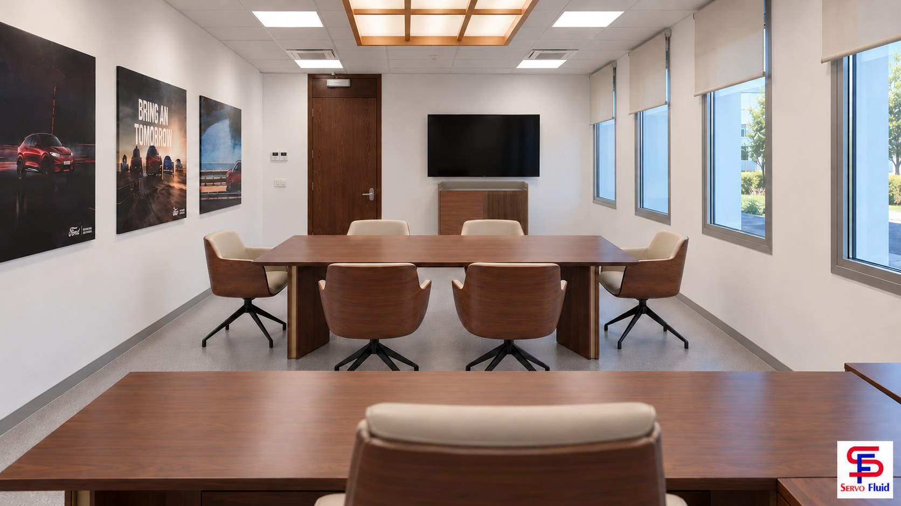

Medida confirmada de la estantería: 180 cm de alto × 180 cm de ancho × 40 cm de fondo. Diseño abierto Stockholm de Punt, con baldas de nogal y paneles de aluminio y madera alistonada.
Medidas actualizadas del aparador: 122 cm de ancho × 46 cm de fondo × 91 cm de alto. Diseño según la foto web: puerta lisa a la izquierda, puerta alistonada a la derecha, bandeja superior de bronce y patas negras finas. TV de 75″ y formato 16:9: unos 166 cm de ancho; el aparador equivale al 73,5 % de ese ancho antes de aplicar la perspectiva.
Imágenes ilustrativas generadas y editadas a partir de las referencias del proyecto. No proceden de un único modelo 3D acotado: pueden existir diferencias de detalle entre vistas. La escala y la configuración especial requieren comprobación técnica antes de fabricación o instalación.